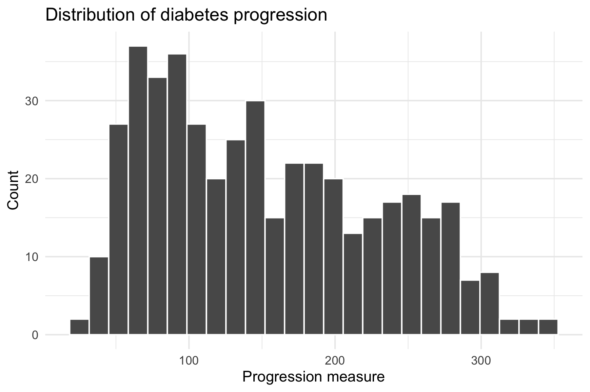
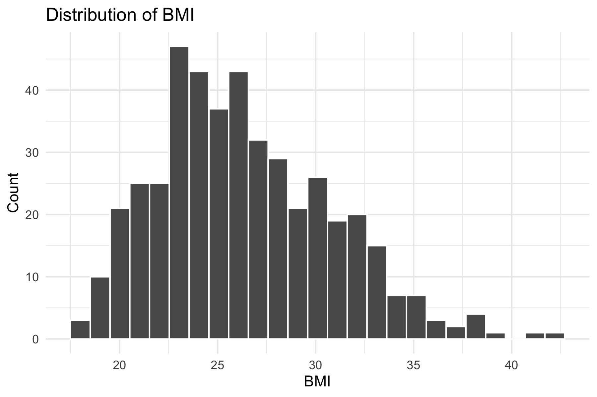
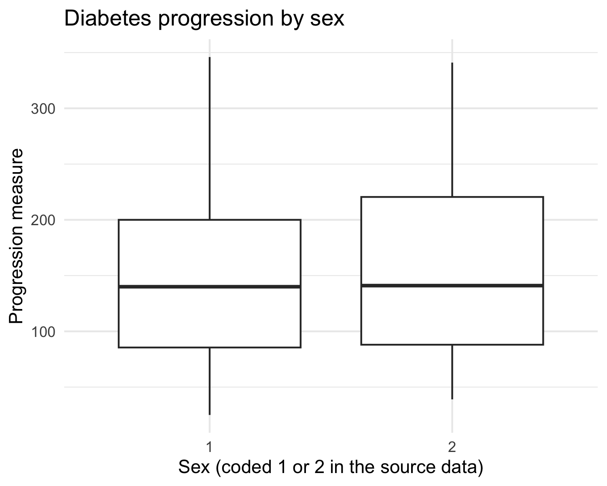
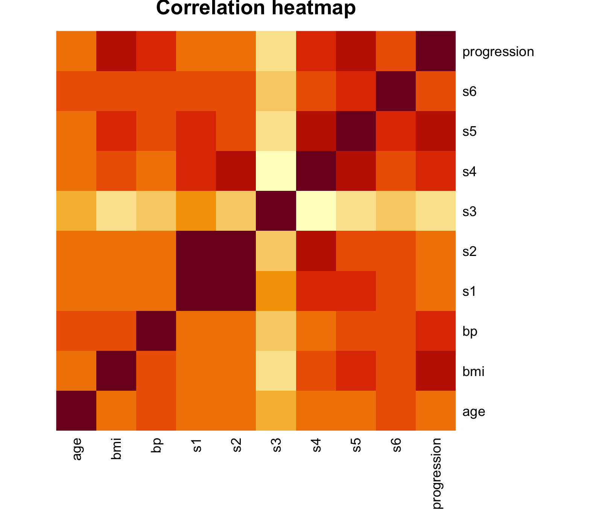
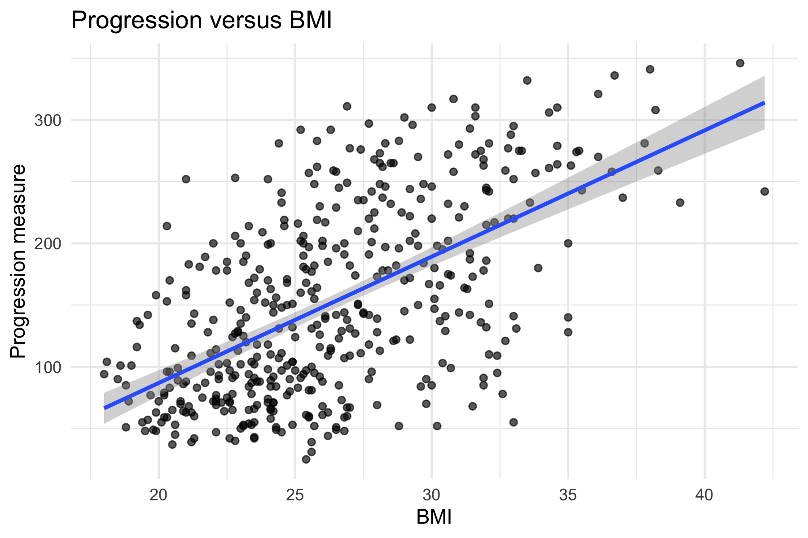
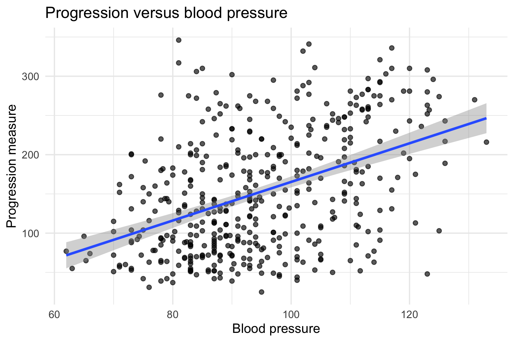
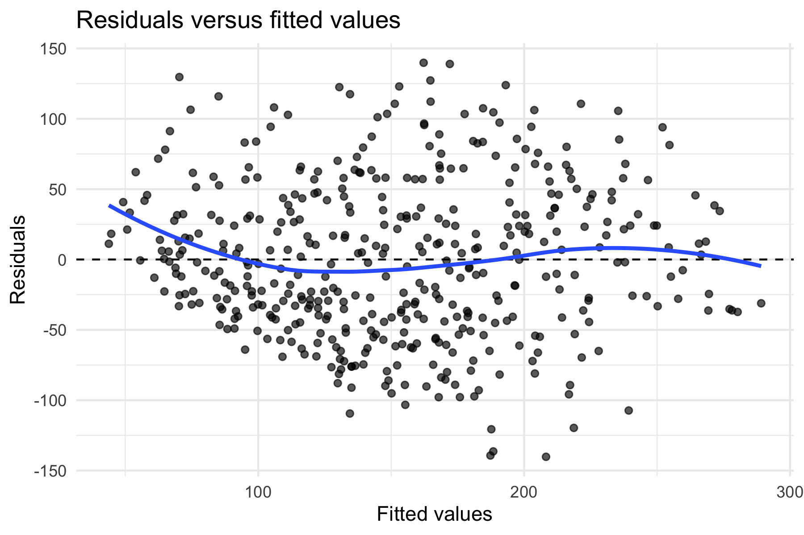

Final project, Scenario 1 · Data Analytics and Statistics · Analysis in R
This report analyses the diabetes dataset supplied with the project. It contains records for 442 patients. Each row is one patient and carries the outcome, a measure of disease progression one year after baseline, together with ten baseline characteristics: age, sex, body mass index (bmi), blood pressure (bp) and six serum measurements labelled s1 to s6. The serum variables are composite laboratory measures and the codebook does not give them clinical names, so I refer to them by their codes throughout.
The data arrived in good shape. I checked every column for missing values and found none, and there are no duplicated rows. All values sit in plausible ranges: bmi runs from 18.0 to 42.2, blood pressure from 62 to 133, and age from 19 to 79. The one variable that needed attention was sex. It is stored as the numbers 1 and 2, but those are category labels rather than measurements, so I converted it to a factor before any modelling. The sample splits into 235 patients in category 1 and 207 in category 2.
One caveat applies to the whole project. These are real patient records on a sensitive health outcome. The analysis can describe patterns in this sample, but it should never be used to make claims about identified individuals, and the observational design limits what the results can prove. I return to this in Section 6.
I summarised the outcome and the main predictors using means, medians, standard deviations and quartiles; the full code is in the analysis file.
Diabetes progression has mean 152.1 and median 140.5, with a standard deviation of 77.1. The gap between mean and median points to a mild right skew, and the maximum (346) sits well above the third quartile (211.5), but the histogram in Figure 1 shows no observation that looks like a data error. The spread is wide. The interquartile range alone spans 124.5 points, which already suggests that patients differ a lot and that any model will leave plenty of variation unexplained.


BMI averages 26.4 with a standard deviation of 4.4 (Figure 2). The distribution is mildly right-skewed, with a few patients above 35. Ages range from 19 to 79 with a median of 50. The two sex groups have broadly similar medians for progression (Figure 3), so I did not expect sex to be a strong predictor, and the correlation results in Section 3 confirmed that.
Nothing in this section flagged a data problem, so I kept all 442 patients in the analysis.

Figure 4 shows Pearson correlations among the ten numeric variables (sex is excluded because it is categorical). Three predictors stand out against progression: bmi (r = 0.59), s5 (r = 0.57) and bp (r = 0.44). Serum measure s4 also correlates moderately (r = 0.43). The one clear negative is s3 (r = −0.39). Age is only weakly related to the outcome (r = 0.19), which surprised me a little, since age often matters in health data.

The predictor-to-predictor correlations matter just as much as the ones with the outcome. s1 and s2 correlate at 0.90, so they nearly duplicate each other. s3 and s4 correlate at −0.74. Putting such pairs in the same regression would inflate coefficient standard errors, so I kept them apart when choosing the model.


Figures 5 and 6 plot the two named predictors against progression. Both relationships are positive and roughly linear, with moderate scatter and no obvious curvature. On the combination of association strength and low redundancy, I selected bmi, bp and s5 for the multiple regression and left s1 and s2 out.
The simple model uses bmi alone:
The slope means that two patients differing by one BMI unit differ by about 10.2 progression points on average. The 95% confidence interval runs from 8.9 to 11.6, so the data pin the slope down tightly. The intercept, −117.8, is the predicted outcome at bmi = 0. No patient is anywhere near that, so the intercept has no practical meaning; it only fixes the height of the line. BMI alone explains 34.4% of the variation in progression (R² = 0.344).
The multiple model adds bp and s5:
Each coefficient is read holding the other two fixed. One extra BMI unit goes with about 6.5 more progression points (95% CI 5.1 to 7.9). Note that the bmi slope dropped from 10.2 to 6.5 once bp and s5 entered the model. The three predictors share information, so part of what bmi explained on its own is also carried by the others. One blood pressure unit goes with 0.9 points (CI 0.48 to 1.33) and one s5 unit goes with 49.6 points (CI 38.0 to 61.2).
| Term | Estimate | Std. error | 95% CI | p-value |
|---|---|---|---|---|
| Intercept | −334.88 | 25.88 | −385.7 to −284.0 | < 2e-16 |
| bmi | 6.50 | 0.70 | 5.13 to 7.87 | < 2e-16 |
| bp | 0.90 | 0.22 | 0.48 to 1.33 | 3.7e-05 |
| s5 | 49.58 | 5.89 | 38.00 to 61.15 | 5.6e-16 |
Table 1. Coefficients of the multiple regression model (n = 442).
Raw slopes are hard to compare because the units differ. Expressed per standard deviation of each predictor, one SD of bmi (4.4) corresponds to about 28.7 points of progression, one SD of s5 (0.52) to about 25.9 points, and one SD of bp (13.8) to about 12.5 points. BMI and s5 carry comparable weight; bp is weaker but not negligible.
| Model | R² | Adjusted R² | Residual SE |
|---|---|---|---|
| Simple: bmi | 0.344 | 0.342 | 62.5 |
| Multiple: bmi + bp + s5 | 0.480 | 0.477 | 55.8 |
Table 2. Model comparison.
Table 2 shows the gain clearly: adjusted R² rises from 0.342 to 0.477 and the residual standard error falls from 62.5 to 55.8. Both added predictors earn their place. Even so, an R² of 0.48 means the model explains less than half the variation, so I treat it as a description of average patterns rather than a prediction tool for individual patients. I would also not judge the models on R² alone; simplicity, uncertainty and the purpose of the model all matter, and for description the smaller model remains attractive because one predictor is easier to communicate.
Figure 7 plots residuals against fitted values for the multiple model. The points scatter around zero without a curve, and the spread stays roughly constant across the fitted range. I see no serious violation of linearity or equal variance. A formal test would be more precise, but for this project the visual check is reassuring.

Multicollinearity is not a problem in the model I fitted. The variance inflation factors are 1.35 (bmi), 1.27 (bp) and 1.34 (s5), all far below the common warning thresholds of 5 or 10. This matches Section 3: I deliberately avoided the s1–s2 pair, whose 0.90 correlation would have produced much larger VIFs.
The confidence intervals show how much uncertainty remains. The bmi slope is 6.50 with a 95% CI of 5.1 to 7.9, and s5 is 49.6 with CI 38.0 to 61.2. Both sit clearly away from zero and are large enough to matter in practice. The bp slope is also statistically clear (CI 0.48 to 1.33) but modest in size, about 0.9 points per blood pressure unit. This is where statistical significance and practical importance part ways: with 442 patients, effects this small can register as significant, so the intervals and the units deserve more attention than the significance stars.
The weaknesses I would flag are these. The model leaves 52% of the variation unexplained. The data are observational, so the coefficients mix association with whatever confounding exists. And the serum variables are anonymised composites, which limits clinical interpretation even where the statistics look clean.
This is observational data. Patients were measured, not assigned treatments, so nothing here supports a causal claim. Three limits follow from that.
First, confounding. Baseline disease severity, diet, physical activity, medication and genetics all plausibly influence both the predictors and progression, and none are measured here. The bmi slope of 6.5 is an adjusted association within this dataset, not the effect a weight-change intervention would produce. Only a randomised trial could estimate that.
Second, measurement. The outcome and the serum variables come from a standardised protocol, which helps, but s1 to s6 have no public clinical meaning, and single baseline measurements carry day-to-day noise.
Third, generalisability. The 442 patients come from one study population. The directions of the associations (higher bmi, bp and s5 going with faster progression) are the kind of result that often replicates, but the exact slopes should not be assumed to transfer to other populations or health systems.
Taking everything together, the analysis supports these conclusions:
And the claims it does not support: causal statements of any kind, individual-level prediction (the model explains under half the variation), and any recommendation to intervene on a predictor without trial evidence. A health-service reader should treat the model as a description of risk patterns in a population, not as a decision rule for single patients.
The complete script used for the analysis. It runs top to bottom and reproduces every number in this report.
################################################################################
# FINAL PROJECT SCENARIO 1: UNDERSTANDING DIABETES PROGRESSION
# Complete analysis script
#
# Upload this file AND diabetes.tab.txt to Posit Cloud (or run anywhere),
# set the working directory to the folder containing them, and run top-to-bottom.
################################################################################
# ---------------------------------------------------------------------------- #
# 0. SETUP
# ---------------------------------------------------------------------------- #
needed_packages <- c("ggplot2", "dplyr", "broom")
for (pkg in needed_packages) {
if (!requireNamespace(pkg, quietly = TRUE)) install.packages(pkg)
}
library(ggplot2)
library(dplyr)
library(broom)
options(digits = 4)
# ============================================================================ #
# QUESTION 1. UNDERSTAND AND PREPARE THE DATA
# ============================================================================ #
# One row = one patient (n = 442). Outcome: 'progression', a continuous measure
# of disease progression one year after baseline. Predictors: age, sex, bmi,
# bp (blood pressure) and six serum measurements s1-s6.
data_file <- "diabetes.tab.txt"
if (!file.exists(data_file)) {
message("diabetes.tab.txt not found in working directory - please choose it.")
data_file <- file.choose()
}
diabetes <- read.table(data_file, header = TRUE, sep = "\t")
names(diabetes) <- tolower(names(diabetes))
if ("y" %in% names(diabetes)) diabetes <- rename(diabetes, progression = y)
# 'sex' is coded 1/2 but is a CATEGORY, not a number -> convert to factor.
diabetes$sex <- factor(diabetes$sex)
dim(diabetes) # 442 rows x 11 columns
names(diabetes)
str(diabetes)
colSums(is.na(diabetes)) # missing values per variable -> all zero
sum(is.na(diabetes)) # total missing -> 0
sum(duplicated(diabetes)) # duplicated rows -> 0
summary(diabetes)
# Data quality: no missing values, no duplicates, no impossible values
# (all measurements lie in plausible clinical ranges).
# Responsibility note: these are real patient records, so results describe
# associations in THIS sample - they must not be used to label or predict
# individuals, and interpretation must avoid over-stating what observational
# data can show.
# ============================================================================ #
# QUESTION 2. EXPLORE THE DATA
# ============================================================================ #
describe_numeric <- function(x) {
c(
n = sum(!is.na(x)),
mean = mean(x, na.rm = TRUE),
median = median(x, na.rm = TRUE),
sd = sd(x, na.rm = TRUE),
min = min(x, na.rm = TRUE),
q1 = quantile(x, 0.25, na.rm = TRUE),
q3 = quantile(x, 0.75, na.rm = TRUE),
max = max(x, na.rm = TRUE),
iqr = IQR(x, na.rm = TRUE)
)
}
describe_numeric(diabetes$progression) # centre ~139-140, roughly symmetric, wide spread
describe_numeric(diabetes$bmi)
describe_numeric(diabetes$age)
# Distribution of the outcome.
ggplot(diabetes, aes(x = progression)) +
geom_histogram(bins = 25, colour = "white") +
labs(title = "Distribution of diabetes progression",
x = "Progression measure", y = "Count") +
theme_minimal()
# Distribution of BMI.
ggplot(diabetes, aes(x = bmi)) +
geom_histogram(bins = 25, colour = "white") +
labs(title = "Distribution of BMI", x = "BMI", y = "Count") +
theme_minimal()
# Extra visualisation: progression by sex (boxplot).
ggplot(diabetes, aes(x = sex, y = progression)) +
geom_boxplot() +
labs(title = "Diabetes progression by sex",
x = "Sex (coded 1 or 2 in the source data)", y = "Progression measure") +
theme_minimal()
# Comment: progression is approximately symmetric (mean ~ median ~140) with no
# extreme outliers; BMI is slightly right-skewed; the two sex groups have
# broadly similar medians.
# ============================================================================ #
# QUESTION 3. INVESTIGATE RELATIONSHIPS
# ============================================================================ #
# sex is a factor now, so it is excluded from the Pearson correlations.
numeric_data <- select(diabetes, where(is.numeric))
cor_matrix <- cor(numeric_data, use = "complete.obs", method = "pearson")
round(cor_matrix, 2)
progression_correlations <- sort(cor_matrix[, "progression"], decreasing = TRUE)
print(progression_correlations)
# Strongest positive associations with progression: bmi (~0.59), s5 (~0.57),
# bp (~0.44), s4 (~0.43). s3 has a moderate NEGATIVE association (~-0.39).
# Age (~0.19), s1 (~0.21) and s2 (~0.17) are weakly related.
heatmap(cor_matrix, Rowv = NA, Colv = NA, scale = "none", symm = TRUE,
margins = c(7, 7), main = "Correlation heatmap")
# Among predictors, s1 & s2 are almost perfectly correlated (~0.9) - they carry
# nearly the same information, a multicollinearity risk if both enter a model.
# s4 & s5, and s5 & s6, are also strongly related (~0.66, ~0.62).
# Scatterplot 1: BMI vs progression (strongest single predictor).
ggplot(diabetes, aes(x = bmi, y = progression)) +
geom_point(alpha = 0.65) +
geom_smooth(method = "lm", se = TRUE) +
labs(title = "Progression versus BMI", x = "BMI", y = "Progression measure") +
theme_minimal()
# Scatterplot 2: blood pressure vs progression.
ggplot(diabetes, aes(x = bp, y = progression)) +
geom_point(alpha = 0.65) +
geom_smooth(method = "lm", se = TRUE) +
labs(title = "Progression versus blood pressure",
x = "Blood pressure", y = "Progression measure") +
theme_minimal()
# Both relationships are positive, roughly linear, with moderate scatter.
# ============================================================================ #
# QUESTION 4. BUILD AND INTERPRET REGRESSION MODELS
# ============================================================================ #
# ---- Simple linear regression: progression ~ bmi -----------------------------
simple_model <- lm(progression ~ bmi, data = diabetes)
summary(simple_model)
tidy(simple_model, conf.int = TRUE)
glance(simple_model)
coef(simple_model)
# Fitted equation: progression_hat = -117.77 + 10.23 * bmi
# Slope: each +1 BMI unit is associated with ~10.2 points more progression,
# on average (95% CI 8.9 to 11.6).
# Intercept (-117.8) is the predicted progression at bmi = 0, which is
# biologically meaningless - it only anchors the line.
# R-squared ~ 0.34: BMI alone explains about 34% of the variation in
# progression; ~66% is unexplained.
# ---- Multiple regression: bmi + bp + s5 --------------------------------------
# Chosen from the EDA: the three strongest, well-measured predictors; s1/s2
# were avoided because they are almost perfectly correlated with each other.
multiple_model <- lm(progression ~ bmi + bp + s5, data = diabetes)
summary(multiple_model)
tidy(multiple_model, conf.int = TRUE)
glance(multiple_model)
model_comparison <- bind_rows(
glance(simple_model) %>% mutate(model = "Simple: BMI"),
glance(multiple_model) %>% mutate(model = "Multiple: BMI + BP + S5")
) %>%
select(model, r.squared, adj.r.squared, sigma)
print(model_comparison)
# Interpretation (holding the other predictors constant):
# - bmi: +1 unit -> ~ +6.5 points progression, holding bp and s5 fixed.
# - bp: +1 unit -> ~ +0.9 points progression, holding bmi and s5 fixed.
# - s5: +1 unit -> ~ +49.6 points progression, holding bmi and bp fixed.
# All three remain statistically significant; adjusted R-squared rises from
# ~0.34 (simple) to ~0.48 (multiple), so the extra predictors add real
# explanatory power - but most variation (~52%) is still unexplained, and a
# bigger R-squared does not by itself make the model "better" (simplicity,
# uncertainty and purpose matter too).
# ============================================================================ #
# QUESTION 5. EVALUATE THE ANALYSIS
# ============================================================================ #
# ---- Residuals versus fitted values ------------------------------------------
diagnostic_data <- augment(multiple_model)
ggplot(diagnostic_data, aes(x = .fitted, y = .resid)) +
geom_point(alpha = 0.65) +
geom_hline(yintercept = 0, linetype = 2) +
geom_smooth(se = FALSE) +
labs(title = "Residuals versus fitted values",
x = "Fitted values", y = "Residuals") +
theme_minimal()
# Residuals scatter randomly around zero with no strong curve or funnel shape:
# the linearity and constant-variance assumptions look reasonably satisfied.
# ---- Multicollinearity: VIF --------------------------------------------------
manual_vif <- function(model) {
X <- model.matrix(model)[, -1, drop = FALSE] # remove intercept
vif_values <- sapply(seq_len(ncol(X)), function(i) {
target <- X[, i]
others <- X[, -i, drop = FALSE]
if (ncol(others) == 0) return(1)
r2 <- summary(lm(target ~ others))$r.squared
1 / (1 - r2)
})
setNames(vif_values, colnames(X))
}
manual_vif(multiple_model)
# All VIFs are small (well under 5): bmi, bp and s5 are only moderately
# correlated with each other, so multicollinearity is not a serious problem
# for THIS model - even though s1/s2 (excluded) would have been.
# ---- Statistical uncertainty -------------------------------------------------
coef_table <- tidy(multiple_model, conf.int = TRUE)
print(coef_table)
confint(multiple_model, level = 0.95)
# Example discussion points:
# - bmi: estimate ~6.5, 95% CI [5.1, 7.9], p < 0.001 -> clearly different
# from zero, and the effect is large enough to matter clinically.
# - bp: estimate ~0.90, 95% CI [0.48, 1.33], p < 0.001 -> statistically
# significant; practical size is moderate (about 0.9 points per bp unit).
# Statistical significance (p < 0.05) is not the same as practical importance:
# with n = 442 even small effects can be significant, so the CI and the units
# of the estimate must be read together.
# Weaknesses: observational data, possible confounders not measured, ~52% of
# variation unexplained, and serum variables are composite/standardised
# measures that are hard to interpret clinically.
# ============================================================================ #
# QUESTION 6. DRAW APPROPRIATE CONCLUSIONS
# ============================================================================ #
# No new code. Conclusions supported by the evidence:
# - In THIS observational sample, higher BMI, higher blood pressure and higher
# s5 are each associated with greater diabetes progression one year later.
# - The associations persist after adjusting for the other predictors and are
# statistically clear.
#
# Claims that would GO BEYOND the evidence:
# - "BMI causes faster diabetes progression" - the data are observational;
# confounders (diet, activity, genetics, medication, disease severity at
# baseline) are not controlled, so no causal claim is justified.
# - "Reducing BMI will reduce progression" - an intervention claim, which would
# require an experiment (randomised trial).
# - "These results apply to all diabetic patients" - the sample is one
# population (standardised baseline measures); generalisation to other
# populations is uncertain.
# - Prediction for a single individual - the model explains only ~48% of the
# variation, far too little for individual-level prediction.
################################################################################
# END OF SCRIPT
################################################################################
Excerpts from the R console for the results cited in the report. Full transcript is in output.txt.
Data structure and quality checks
> colSums(is.na(diabetes)) # missing values per variable -> all zero
age sex bmi bp s1 s2 s3
0 0 0 0 0 0 0
s4 s5 s6 progression
0 0 0 0
> sum(is.na(diabetes)) # total missing -> 0
[1] 0
> sum(duplicated(diabetes)) # duplicated rows -> 0
[1] 0
>
> summary(diabetes)
age sex bmi bp s1 s2
Min. :19.0 1:235 Min. :18.0 Min. : 62.0 Min. : 97 Min. : 41.6
1st Qu.:38.2 2:207 1st Qu.:23.2 1st Qu.: 84.0 1st Qu.:164 1st Qu.: 96.0
Median :50.0 Median :25.7 Median : 93.0 Median :186 Median :113.0
Mean :48.5 Mean :26.4 Mean : 94.6 Mean :189 Mean :115.4
3rd Qu.:59.0 3rd Qu.:29.3 3rd Qu.:105.0 3rd Qu.:210 3rd Qu.:134.5
Max. :79.0 Max. :42.2 Max. :133.0 Max. :301 Max. :242.4
s3 s4 s5 s6 progression
Min. :22.0 Min. :2.00 Min. :3.26 Min. : 58.0 Min. : 25
1st Qu.:40.2 1st Qu.:3.00 1st Qu.:4.28 1st Qu.: 83.2 1st Qu.: 87
Median :48.0 Median :4.00 Median :4.62 Median : 91.0 Median :140
Mean :49.8 Mean :4.07 Mean :4.64 Mean : 91.3 Mean :152
3rd Qu.:57.8 3rd Qu.:5.00 3rd Qu.:5.00 3rd Qu.: 98.0 3rd Qu.:212
Max. :99.0 Max. :9.09 Max. :6.11 Max. :124.0 Max. :346
Descriptive statistics for progression, BMI and age
> describe_numeric(diabetes$progression) # centre ~139-140, roughly symmetric, wide spread
n mean median sd min q1.25% q3.75% max iqr
442.00 152.13 140.50 77.09 25.00 87.00 211.50 346.00 124.50
> describe_numeric(diabetes$bmi)
n mean median sd min q1.25% q3.75% max iqr
442.000 26.376 25.700 4.418 18.000 23.200 29.275 42.200 6.075
> describe_numeric(diabetes$age)
n mean median sd min q1.25% q3.75% max iqr
442.00 48.52 50.00 13.11 19.00 38.25 59.00 79.00 20.75
>
Correlations of all numeric predictors with progression
> progression_correlations <- sort(cor_matrix[, "progression"], decreasing = TRUE)
> print(progression_correlations)
progression bmi s5 bp s4 s6 s1
1.0000 0.5865 0.5659 0.4415 0.4305 0.3825 0.2120
age s2 s3
0.1879 0.1741 -0.3948
Simple linear regression: progression ~ bmi
> simple_model <- lm(progression ~ bmi, data = diabetes)
> summary(simple_model)
Call:
lm(formula = progression ~ bmi, data = diabetes)
Residuals:
Min 1Q Median 3Q Max
-164.92 -43.57 -8.65 46.34 154.88
Coefficients:
Estimate Std. Error t value Pr(>|t|)
(Intercept) -117.773 18.019 -6.54 1.8e-10 ***
bmi 10.233 0.674 15.19 < 2e-16 ***
---
Signif. codes: 0 ‘***’ 0.001 ‘**’ 0.01 ‘*’ 0.05 ‘.’ 0.1 ‘ ’ 1
Residual standard error: 62.5 on 440 degrees of freedom
Multiple R-squared: 0.344, Adjusted R-squared: 0.342
F-statistic: 231 on 1 and 440 DF, p-value: <2e-16
> tidy(simple_model, conf.int = TRUE)
# A tibble: 2 × 7
term estimate std.error statistic p.value conf.low conf.high
<chr> <dbl> <dbl> <dbl> <dbl> <dbl> <dbl>
1 (Intercept) -118. 18.0 -6.54 1.75e-10 -153. -82.4
2 bmi 10.2 0.674 15.2 3.47e-42 8.91 11.6
> glance(simple_model)
# A tibble: 1 × 12
r.squared adj.r.squared sigma statistic p.value df logLik AIC BIC deviance
<dbl> <dbl> <dbl> <dbl> <dbl> <dbl> <dbl> <dbl> <dbl> <dbl>
1 0.344 0.342 62.5 231. 3.47e-42 1 -2454. 4914. 4926. 1719582.
# ℹ 2 more variables: df.residual <int>, nobs <int>
> coef(simple_model)
(Intercept) bmi
-117.77 10.23
>
Multiple regression: progression ~ bmi + bp + s5, and model comparison
> multiple_model <- lm(progression ~ bmi + bp + s5, data = diabetes)
>
> summary(multiple_model)
Call:
lm(formula = progression ~ bmi + bp + s5, data = diabetes)
Residuals:
Min 1Q Median 3Q Max
-140.23 -40.64 -2.19 38.27 139.80
Coefficients:
Estimate Std. Error t value Pr(>|t|)
(Intercept) -334.881 25.878 -12.94 < 2e-16 ***
bmi 6.500 0.697 9.32 < 2e-16 ***
bp 0.903 0.217 4.17 3.7e-05 ***
s5 49.577 5.890 8.42 5.6e-16 ***
---
Signif. codes: 0 ‘***’ 0.001 ‘**’ 0.01 ‘*’ 0.05 ‘.’ 0.1 ‘ ’ 1
Residual standard error: 55.8 on 438 degrees of freedom
Multiple R-squared: 0.48, Adjusted R-squared: 0.477
F-statistic: 135 on 3 and 438 DF, p-value: <2e-16
> tidy(multiple_model, conf.int = TRUE)
# A tibble: 4 × 7
term estimate std.error statistic p.value conf.low conf.high
<chr> <dbl> <dbl> <dbl> <dbl> <dbl> <dbl>
1 (Intercept) -335. 25.9 -12.9 1.16e-32 -386. -284.
2 bmi 6.50 0.697 9.32 5.55e-19 5.13 7.87
3 bp 0.903 0.217 4.17 3.74e- 5 0.477 1.33
4 s5 49.6 5.89 8.42 5.56e-16 38.0 61.2
> glance(multiple_model)
# A tibble: 1 × 12
r.squared adj.r.squared sigma statistic p.value df logLik AIC BIC deviance
<dbl> <dbl> <dbl> <dbl> <dbl> <dbl> <dbl> <dbl> <dbl> <dbl>
1 0.480 0.477 55.8 135. 7.16e-62 3 -2403. 4815. 4836. 1362709.
# ℹ 2 more variables: df.residual <int>, nobs <int>
>
> model_comparison <- bind_rows(
+ glance(simple_model) %>% mutate(model = "Simple: BMI"),
+ glance(multiple_model) %>% mutate(model = "Multiple: BMI + BP + S5")
+ ) %>%
+ select(model, r.squared, adj.r.squared, sigma)
> print(model_comparison)
# A tibble: 2 × 4
model r.squared adj.r.squared sigma
<chr> <dbl> <dbl> <dbl>
1 Simple: BMI 0.344 0.342 62.5
2 Multiple: BMI + BP + S5 0.480 0.477 55.8
>
Model comparison
> model_comparison <- bind_rows( + glance(simple_model) %>% mutate(model = "Simple: BMI"), + glance(multiple_model) %>% mutate(model = "Multiple: BMI + BP + S5") + ) %>% + select(model, r.squared, adj.r.squared, sigma) > print(model_comparison) # A tibble: 2 × 4 model r.squared adj.r.squared sigma <chr> <dbl> <dbl> <dbl> 1 Simple: BMI 0.344 0.342 62.5 2 Multiple: BMI + BP + S5 0.480 0.477 55.8 >
Variance inflation factors
> manual_vif(multiple_model) bmi bp s5 1.345 1.274 1.342 > # All VIFs are small (well under 5): bmi, bp and s5 are only moderately > # correlated with each other, so multicollinearity is not a serious problem > # for THIS model - even though s1/s2 (excluded) would have been. >
95% confidence intervals for the multiple model
> confint(multiple_model, level = 0.95)
2.5 % 97.5 %
(Intercept) -385.7426 -284.020
bmi 5.1300 7.870
bp 0.4769 1.329
s5 38.0002 61.154
>